远程会话 · 弹窗效果列表
图片窗口固定为视口高度的 80%
其他弹窗最多为视口高度的 80%
范围：会话顶部、消息正文、输入区。点击效果图可查看原尺寸截图。
以下为本地浏览器实拍，手机视口 412 × 915；会话、模型、Skill 和项目使用示例数据。
01图片预览 · 默认
入口：点击正文、附件或输入区中的图片缩略图。
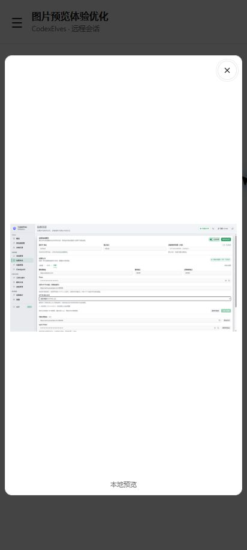
保持窗口大小，图片等比完整显示。查看竖图效果
02图片预览 · 放大
入口：在图片内双指／滚轮缩放，放大后拖动查看。
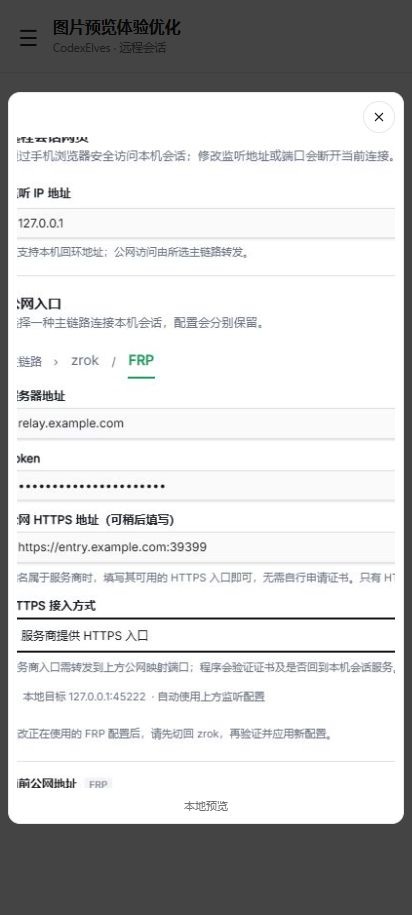
仅图片缩放，窗口尺寸保持不变。
03视频预览
入口：点击正文或附件中的视频封面。
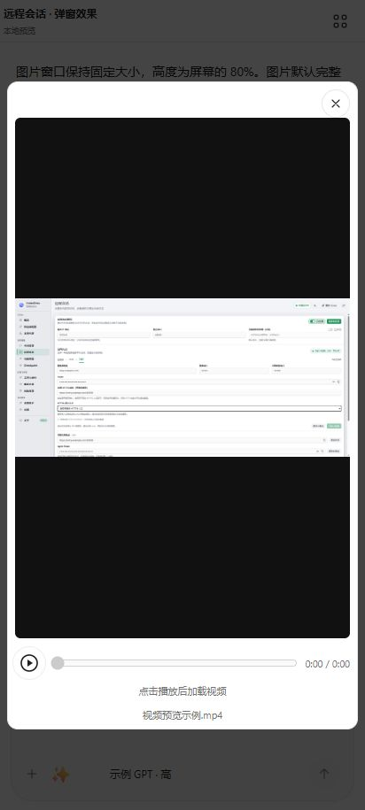
点击播放后加载，播放区域保持稳定。
04顶部会话菜单
入口：会话标题右侧的四宫格按钮。
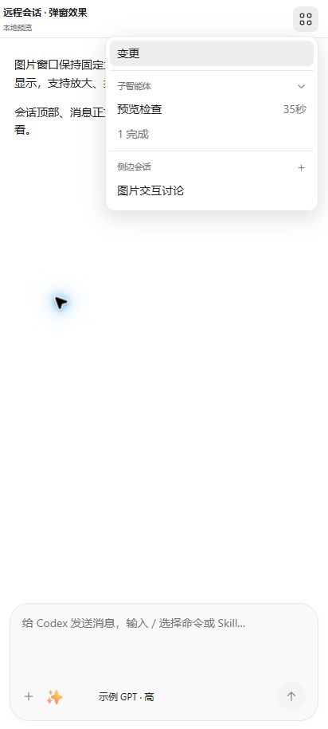
包含变更、子智能体和侧边会话。
05侧边会话操作
入口：在会话菜单中长按／右键侧边会话。
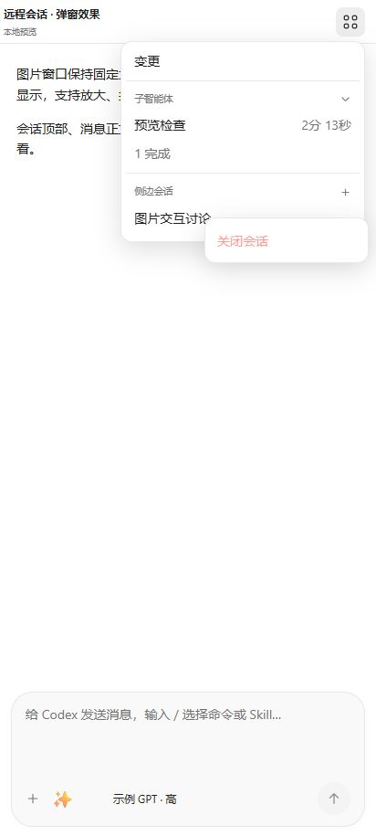
显示关闭会话入口。
06输入区“＋”菜单
入口：点击输入框左下方的“＋”。
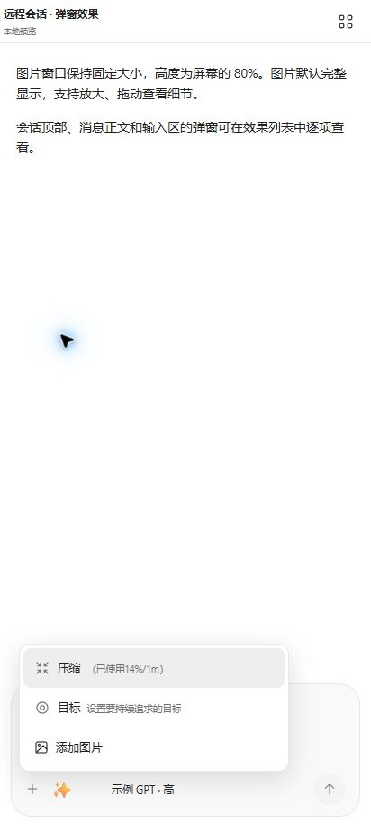
包含压缩、目标和添加图片。
07模型与思考深度
入口：点击输入区下方的模型名称。
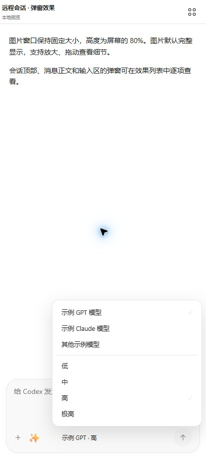
模型列表和思考深度分组显示。
08命令与 Skill
入口：在输入框中输入“/”。
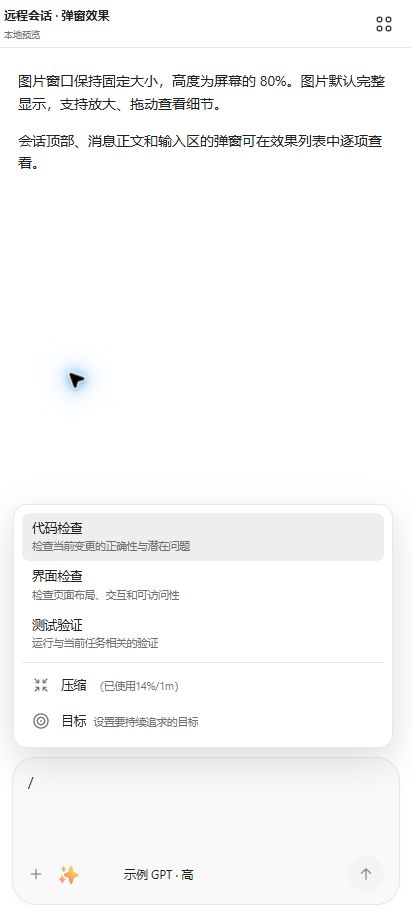
Skill 列表，以及压缩、目标快捷命令。
09上下文用量
入口：点击输入区的上下文用量圆环。
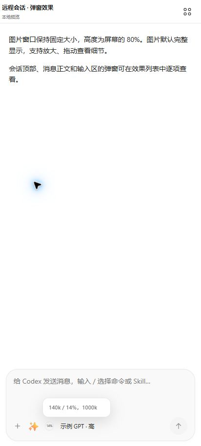
显示最后一次请求的上下文占用。
10新会话项目选择
入口：新建会话时点击输入区上方的项目选择器。
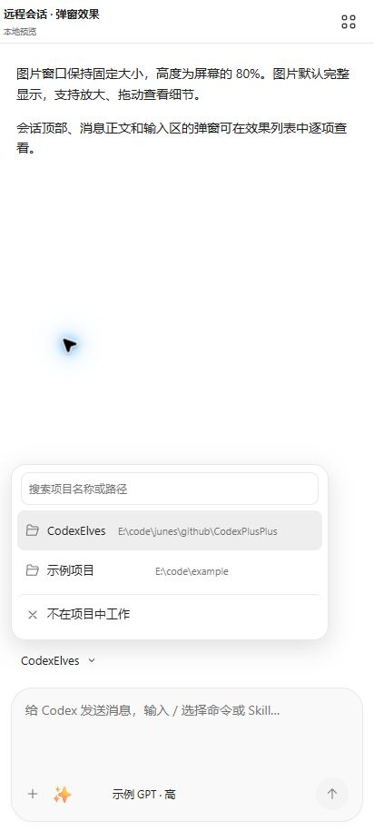
支持搜索，底部保留“不在项目中工作”。
11目标编辑
入口：已有目标栏中的“编辑”按钮。
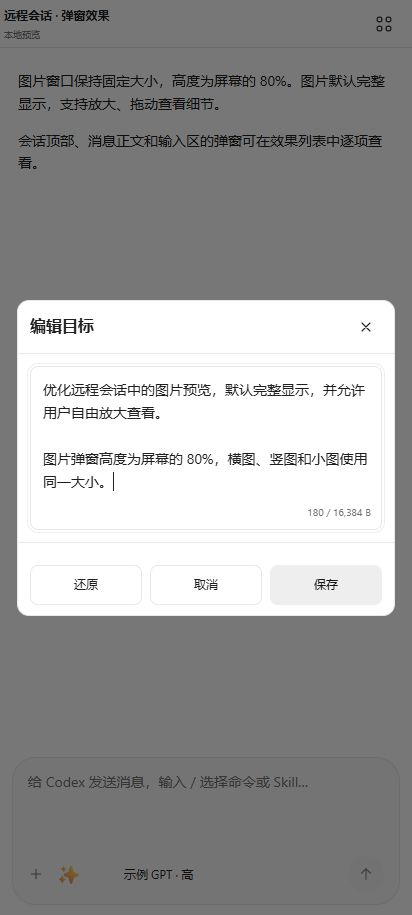
编辑区可滚动，操作按钮保持可用。
12排队消息操作
入口：排队消息右侧“…”或右键消息。
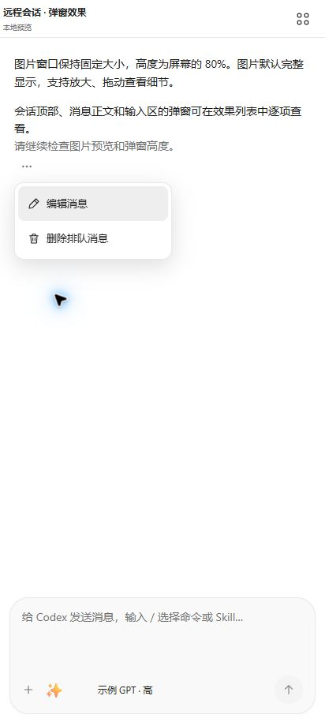
包含编辑消息、删除排队消息。
13通用操作确认
入口：关闭侧边会话、允许本会话或解除锁定等操作。
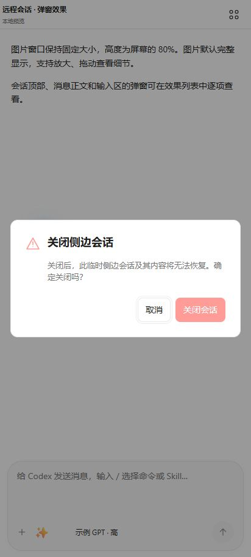
相同确认版式合并展示。
14操作结果提示
入口：复制消息、出现操作错误等情况。
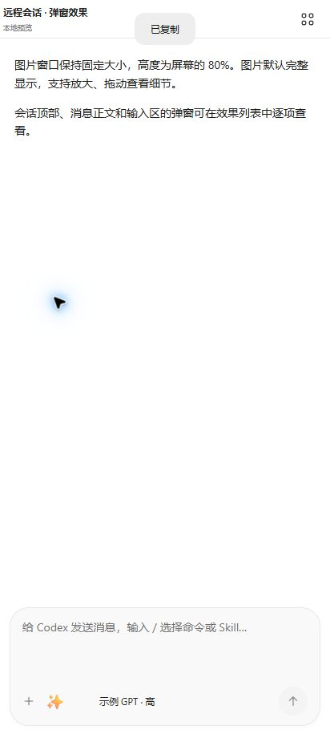
短暂显示的非模态提示。